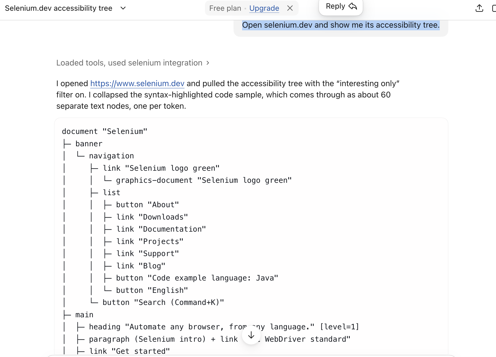

What changed in release 1.0.1?
Selenium MCP Server 1.0.1 updates Selenium to 4.54.0 and adds tools for accessibility snapshots of a page or a selected element. Your MCP client can use the resulting roles, names, and states to understand the page before choosing an action.
From markup to meaning
A web page contains much more than the controls a person sees: nested elements, styling, scripts, and implementation details. An accessibility snapshot offers a different view, describing a page in terms such as heading, link, button, and textbox.
For an MCP client, that semantic context can make it easier to understand what is on the page, identify useful controls, and choose the next action. It complements, rather than replaces, screenshots, page text, and HTML.
How it works
Selenium computes a snapshot from the DOM using accessibility concepts such as roles and accessible names. The server returns Selenium's readable text representation, including applicable states and values. Reachable child frames are included; the snapshot starts at the currently selected browsing context.
This is Selenium's DOM-computed snapshot, not the browser's native accessibility tree. The two can differ, and a snapshot alone is not a complete accessibility audit.
Set up Claude Desktop on macOS
Install Python 3.10 or later and your chosen browser. In Terminal, clone the repository, check out the release, and install its dependencies:
git clone https://github.com/rpallavisharma/seleniummcpserver.git
cd seleniummcpserver
git checkout 1.0.1
python3 -m venv .venv
.venv/bin/pip install -r requirements.txt
pwd
Copy the path printed by pwd. In Claude Desktop, open
Settings → Developer → Edit Config. Add the following
selenium entry inside the existing mcpServers
object, replacing both paths with your repository path:
{
"mcpServers": {
"selenium": {
"command": "/YOUR/REPO/PATH/.venv/bin/python",
"args": ["-m", "selenium_mcp_server"],
"env": {
"PYTHONPATH": "/YOUR/REPO/PATH",
"SELENIUM_BROWSER": "chrome",
"SELENIUM_HEADLESS": "false"
}
}
}
}
Save the configuration, fully quit Claude Desktop, and reopen it.
Chrome is the default; set SELENIUM_BROWSER to
firefox, edge, or safari to
use another installed browser. Safari requires macOS and automation
enabled in its Develop menu. Selenium Manager may need network access
to obtain a compatible driver on first use. See the
complete setup guide for troubleshooting.
Try it: inspect Selenium.dev
Ask Claude:
Claude can navigate to the site and call the page snapshot tool:
get_accessibility_tree(interesting_only=true)
The following is the complete example shown in this post. It is an abbreviated summary of a snapshot, not the complete raw tool output: paragraph text and the syntax-highlighted code sample are collapsed. Page content and snapshots can change over time.
Show the Selenium.dev example tree
document "Selenium"
├─ banner
│ └─ navigation
│ ├─ link "Selenium logo green"
│ │ └─ graphics-document "Selenium logo green"
│ ├─ list
│ │ ├─ button "About"
│ │ ├─ link "Downloads"
│ │ ├─ link "Documentation"
│ │ ├─ link "Projects"
│ │ ├─ link "Support"
│ │ ├─ link "Blog"
│ │ ├─ button "Code example language: Java"
│ │ └─ button "English"
│ └─ button "Search (Command+K)"
├─ main
│ ├─ heading "Automate any browser, from any language." [level=1]
│ ├─ paragraph (Selenium intro) + link "W3C WebDriver standard"
│ ├─ link "Get started"
│ ├─ link "Using AI agents"
│ ├─ paragraph "Works out of the box: …"
│ ├─ heading "Install Selenium and run your first script" [level=2]
│ ├─ paragraph
│ ├─ tablist "Code example language"
│ │ ├─ tab "Java" [selected]
│ │ ├─ tab "Python"
│ │ ├─ tab "CSharp"
│ │ ├─ tab "Ruby"
│ │ ├─ tab "JavaScript"
│ │ └─ tab "Kotlin"
│ ├─ tabpanel "Java"
│ │ ├─ paragraph + code "org.seleniumhq.selenium:selenium-java"
│ │ ├─ code (≈60 single-token text nodes: package, dev, ., selenium, …)
│ │ └─ link "View on GitHub"
│ ├─ paragraph + link "Getting Started guide"
│ ├─ heading "Pick your tool" [level=2]
│ │ ├─ graphics-document "Selenium WebDriver"
│ │ ├─ heading "Selenium WebDriver" [level=4]
│ │ ├─ paragraph "Use this when …"
│ │ ├─ link "Read more"
│ │ ├─ graphics-document "Selenium Grid"
│ │ ├─ heading "Selenium Grid" [level=4]
│ │ ├─ paragraph "Use this when …"
│ │ └─ link "Read more"
│ ├─ heading "Used by projects and teams including" [level=2]
│ │ ├─ link "34,616 GitHub stars"
│ │ └─ list: Wikimedia Foundation, OpenStack, Jenkins, Drupal,
│ │ Moodle, Mozilla, Progress, trivago (each a link)
│ ├─ paragraph + link "Add your logo"
│ ├─ paragraph (logo attributions) + links "Jenkins project", "CC BY-SA 3.0"
│ ├─ heading "Development Partners" [level=2]
│ │ └─ links: BrowserStack, TestMu AI (formerly LambdaTest)
│ ├─ heading "Selenium Level Sponsors" [level=2]
│ │ └─ links: Bright Data, Applitools, Thordata
│ ├─ heading "News" [level=2]
│ │ ├─ heading "Selenium 4.54 Released!" [level=4] (Nov 23, 2026) + link "Read More"
│ │ ├─ heading "Selenium 4.53 Released!" [level=4] (Nov 17, 2026) + link "Read More"
│ │ ├─ heading "Selenium 4.52 Released!" [level=4] (Oct 29, 2026) + link "Read More"
│ │ └─ link "More news"
│ ├─ heading "Support the Selenium Project" [level=2] + link "Learn more"
│ └─ heading "Donate to Selenium" [level=2]
│ └─ heading "through Open Collective" [level=3] → link "Open Collective"
└─ contentinfo
├─ list: Linkedin, X, Community YouTube, Mastodon, BlueSky,
│ User mailing list, SeleniumConf YouTube
├─ list: Software Freedom Conservancy, GitHub, Slack, IRC,
│ Developer mailing list
├─ link "Deploys by Netlify"
└─ text "© 2026 Software Freedom Conservancy All Rights Reserved"
└─ link "About Selenium"To see the complete, current output, ask Claude to return the raw tool result without summarizing it. The tool's text format uses indentation and dashes rather than the branch characters shown in this summary.
By default, unnamed generic and presentational elements are pruned.
Set interesting_only to false to include all
rendered elements. For a smaller area, inspect the first element matching
a supported locator:
get_element_accessibility_tree(
strategy="css",
selector="main",
interesting_only=true
)
For example, ask: “Open the page, inspect the main section's accessibility
tree, and describe its controls.” If you then want to interact with a
control, the client can use the existing locator-based tools such as
find_elements and click_element.
What to keep in mind
- The text output does not provide reusable element references, descriptions, or URLs. A role and name in the snapshot is not itself a locator.
- Snapshots are point-in-time views. A page may change before a later interaction.
- Snapshots can contain sensitive page text and form values. Share them only with clients you trust.
- Selenium's snapshot API is designed for multiple browsers, but behavior depends on the browser and driver. This server supports Chrome, Firefox, Edge, and Safari.
Want more detail? Explore the browser tools or the Selenium snapshot implementation.